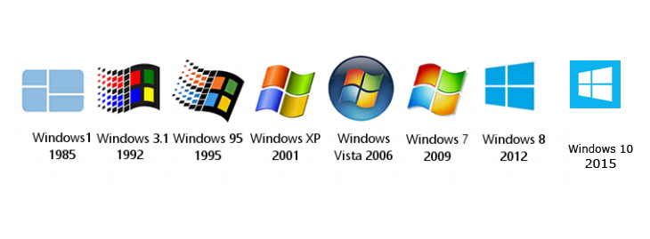

Programs

Many programs and OS had Comic Sans already preinstalled, every Windows OS ever since Windows 95, every version of Microsoft Office programs, Mac OS, and on Windows phones. There aren't many third party programs that have Comic Sans preinstalled, the only one that comes to mind is Adobe Creative Cloud, so Dreamweaver, Animate, Photoshop etc. To this day Windows still have Comic Sans preinstalled with their products.
Quote from the inventor
"People who don't like Comic Sans don't know anything about design."- Vincent Connare
©Copyright 2020. Cooper! ComicSansLover@live.com.au